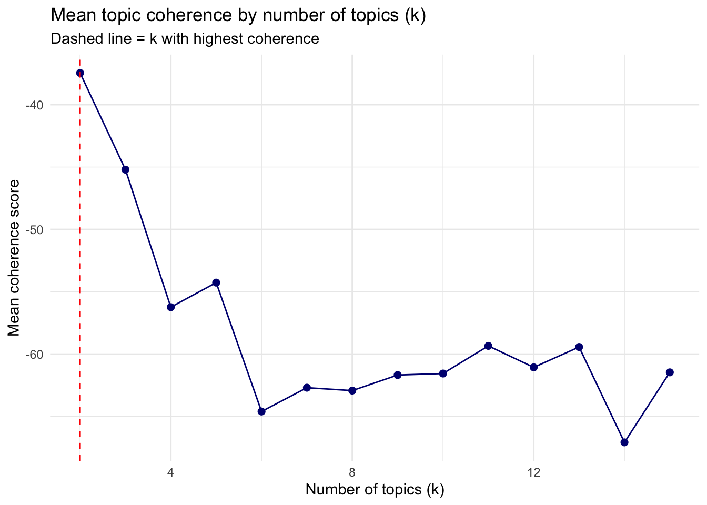
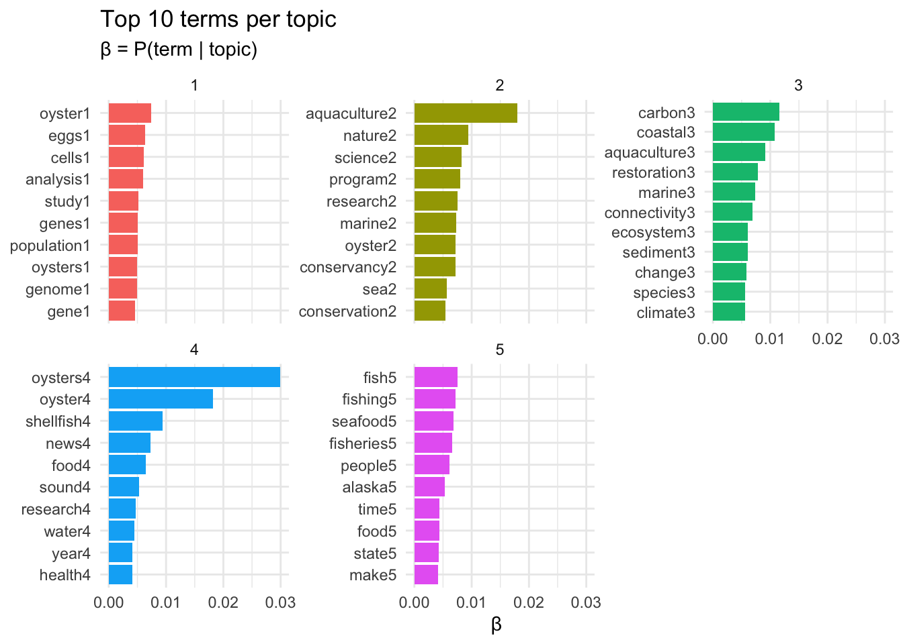
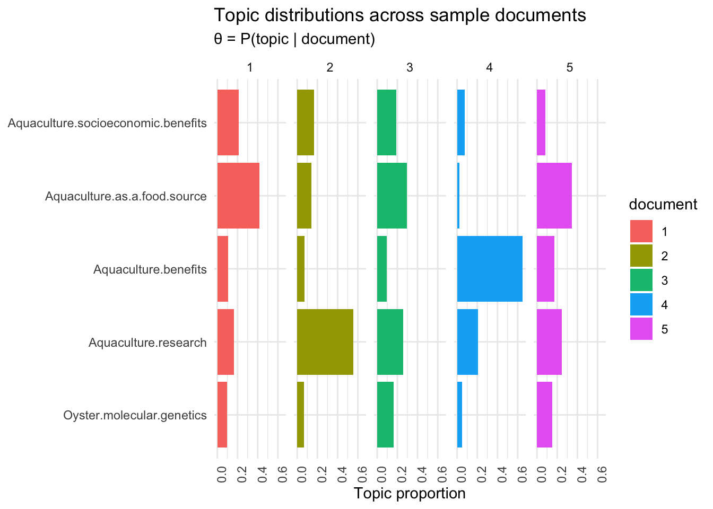

# load necessary libraries
library(LexisNexisTools)
library(tidyverse)
library(quanteda)
library(tm)
library(topicmodels)
library(topicdoc)
library(tidyverse)
library(tidytext)
library(reshape2)
library(tictoc)
library(LDAvis)
library(tsne)
library(servr)Exploring Oyster Aquaculture Journalistic Topics
# extract data from the files
pre_files <- list.files(
path = here::here("oyster-aquaculture", "data"),
pattern = "\\.docx$",
full.names = TRUE,
recursive = TRUE,
ignore.case = TRUE
)
pre_dat <- lnt_read(pre_files)
pre_meta_df <- pre_dat@meta
pre_articles_df <- pre_dat@articles
pre_paragraphs_df <- pre_dat@paragraphs
df <- tibble(
date = pre_meta_df$Date,
headline = pre_meta_df$Headline,
id = pre_meta_df$ID,
text = pre_articles_df$Article,
source = pre_meta_df$Newspaper
)1. Build and clean your corpus Create a corpus from your articles. Clean appropriately for your data — consider what stopwords, minimum document frequencies, and tokenization choices make sense given your specific corpus.
Build the Corpus
We use corpus() from {quanteda} to build the corpus from our data frame.
corpus <- corpus(x=df, text_field = "text")Tokenize and Clean
I removed common journalistic words as well as words that first appeared in my categories that were unhelpful in understanding the topics discussed.
add_stops <- c(quanteda::stopwords("en", source = "smart"),
"said", "says", "told", "according",
"`", "1", "vol", "pg", "fig", "2")
toks <- tokens(corpus, remove_punct = TRUE) |>
tokens_tolower()
toks1 <- tokens_select(toks, pattern = add_stops, selection = "remove")Build the Document-Feature Matrix
I built a document-feature matrix (DFM) to remove words that are used in 2 or fewer articles.
dfm1 <- dfm(toks1)
dfm2 <- dfm_trim(dfm1, min_docfreq = 2)
# Remove empty rows — LDA will error on these
sel_idx <- slam::row_sums(dfm2) > 0
dfm <- dfm2[sel_idx,]2. Select k using multiple criteria
Run three models (i.e. with 3 values of k) and select the overall best value for k (the number of topics) - include some justification for your selection: FindTopicsNumber() optimization metrics, theory, interpretability, LDAvis. Select the best single value of k. Criteria to consider:
- Optimization Metrics - Run models across a range of k values and produce a coherence plot using topicdoc.
- Theory: what themes do you expect given your article topic?
- Interpretability: read the top 10 terms at candidate k values — do they form coherent, distinct themes?
- LDAvis: do the topic circles separate well, or do they overlap heavily?
Initial Model (Theory-Driven k)
Model with 3 topics
I think there may be political, food centered, and environmental articles. So I run the model to search for three topics.
k <- 3
topicModel_k3 <- LDA(dfm,
k,
method = "Gibbs",
control = list(iter = 100,
verbose = 25,
seed = 321))K = 3; V = 9342; M = 108
Sampling 100 iterations!
Iteration 25 ...
Iteration 50 ...
Iteration 75 ...
Iteration 100 ...
Gibbs sampling completed!tmResult <- posterior(topicModel_k3)
terms(topicModel_k3, 10) Topic 1 Topic 2 Topic 3
[1,] "aquaculture" "carbon" "oysters"
[2,] "oyster" "coastal" "oyster"
[3,] "research" "species" "seafood"
[4,] "nature" "oyster" "food"
[5,] "marine" "aquaculture" "fishing"
[6,] "science" "connectivity" "fish"
[7,] "restoration" "marine" "year"
[8,] "program" "sediment" "fisheries"
[9,] "project" "data" "people"
[10,] "news" "ecosystem" "time" theta <- tmResult$topics
beta <- tmResult$terms
vocab <- colnames(beta)Inspect the Posterior Distributions
posterior() extracts the two key output matrices:
- theta (θ): document × topic matrix — P(topic | document)
- beta/phi (φ): topic × term matrix — P(term | topic)
result <- posterior(topicModel_k3)
beta <- result$terms
theta <- result$topics
cat("phi dimensions (topics × vocab):", dim(beta), "\n")phi dimensions (topics × vocab): 3 9342 cat("theta dimensions (docs × topics):", dim(theta), "\n")theta dimensions (docs × topics): 108 3 # Top 10 terms per topic
terms(topicModel_k3, 10) Topic 1 Topic 2 Topic 3
[1,] "aquaculture" "carbon" "oysters"
[2,] "oyster" "coastal" "oyster"
[3,] "research" "species" "seafood"
[4,] "nature" "oyster" "food"
[5,] "marine" "aquaculture" "fishing"
[6,] "science" "connectivity" "fish"
[7,] "restoration" "marine" "year"
[8,] "program" "sediment" "fisheries"
[9,] "project" "data" "people"
[10,] "news" "ecosystem" "time" These topics are not quite easily distinguishable. They all have some general words. Creating more categories could create more discrete groups.
svd_tsne <- function(x) tsne(svd(x)$u)
json <- createJSON(
phi = tmResult$terms,
theta = tmResult$topics,
doc.length = rowSums(dfm),
vocab = colnames(dfm),
term.frequency = colSums(dfm),
mds.method = svd_tsne,
plot.opts = list(xlab = "", ylab = "")
)
serVis(json)The circles do separate well.
Model with 4 topics
Alternatively the model could have 4 topics: economic, political, food centered, and environmental articles.
k <- 4
topicModel_k4 <- LDA(dfm,
k,
method = "Gibbs",
control = list(iter = 100,
verbose = 25,
seed = 321))K = 4; V = 9342; M = 108
Sampling 100 iterations!
Iteration 25 ...
Iteration 50 ...
Iteration 75 ...
Iteration 100 ...
Gibbs sampling completed!tmResult <- posterior(topicModel_k4)
terms(topicModel_k4, 10) Topic 1 Topic 2 Topic 3 Topic 4
[1,] "oyster" "carbon" "oysters" "aquaculture"
[2,] "cells" "coastal" "oyster" "state"
[3,] "population" "aquaculture" "shellfish" "seafood"
[4,] "analysis" "marine" "food" "fisheries"
[5,] "oysters" "restoration" "news" "fishing"
[6,] "study" "species" "aquaculture" "nature"
[7,] "genes" "connectivity" "research" "fish"
[8,] "genome" "ecosystem" "bay" "people"
[9,] "data" "sediment" "sound" "program"
[10,] "sea" "habitats" "water" "alaska" theta <- tmResult$topics
beta <- tmResult$terms
vocab <- colnames(beta)Inspect the Posterior Distributions
posterior() extracts the two key output matrices:
- theta (θ): document × topic matrix — P(topic | document)
- beta/phi (φ): topic × term matrix — P(term | topic)
result <- posterior(topicModel_k4)
beta <- result$terms
theta <- result$topics
cat("phi dimensions (topics × vocab):", dim(beta), "\n")phi dimensions (topics × vocab): 4 9342 cat("theta dimensions (docs × topics):", dim(theta), "\n")theta dimensions (docs × topics): 108 4 # Top 10 terms per topic
terms(topicModel_k4, 10) Topic 1 Topic 2 Topic 3 Topic 4
[1,] "oyster" "carbon" "oysters" "aquaculture"
[2,] "cells" "coastal" "oyster" "state"
[3,] "population" "aquaculture" "shellfish" "seafood"
[4,] "analysis" "marine" "food" "fisheries"
[5,] "oysters" "restoration" "news" "fishing"
[6,] "study" "species" "aquaculture" "nature"
[7,] "genes" "connectivity" "research" "fish"
[8,] "genome" "ecosystem" "bay" "people"
[9,] "data" "sediment" "sound" "program"
[10,] "sea" "habitats" "water" "alaska" These topics are more easily distinguishable compared to when only creating three groups. The topics I would assign these lists are “Oyster molecular genetics”, “Aquaculture benefits”, “Aquaculture as a food source”, and “Aquaculture socioeconomic benefits”.
svd_tsne <- function(x) tsne(svd(x)$u)
json <- createJSON(
phi = tmResult$terms,
theta = tmResult$topics,
doc.length = rowSums(dfm),
vocab = colnames(dfm),
term.frequency = colSums(dfm),
mds.method = svd_tsne,
plot.opts = list(xlab = "", ylab = "")
)
serVis(json)The circles do separate well.
Model with 5 topics
Maybe the model has 5 topics: possible aquaculture drawbacks, economic, political, food centered, and environmental articles.
k <- 5
topicModel_k5 <- LDA(dfm,
k,
method = "Gibbs",
control = list(iter = 100,
verbose = 25,
seed = 321))K = 5; V = 9342; M = 108
Sampling 100 iterations!
Iteration 25 ...
Iteration 50 ...
Iteration 75 ...
Iteration 100 ...
Gibbs sampling completed!tmResult <- posterior(topicModel_k5)
terms(topicModel_k5, 10) Topic 1 Topic 2 Topic 3 Topic 4 Topic 5
[1,] "oyster" "aquaculture" "carbon" "oysters" "fishing"
[2,] "eggs" "nature" "coastal" "oyster" "fish"
[3,] "cells" "research" "aquaculture" "shellfish" "fisheries"
[4,] "study" "oyster" "marine" "news" "people"
[5,] "analysis" "program" "restoration" "food" "seafood"
[6,] "population" "marine" "connectivity" "sound" "state"
[7,] "genes" "science" "sediment" "health" "alaska"
[8,] "genome" "conservancy" "ecosystem" "bay" "food"
[9,] "oysters" "project" "change" "year" "make"
[10,] "sea" "conservation" "habitats" "water" "year" theta <- tmResult$topics
beta <- tmResult$terms
vocab <- colnames(beta)Inspect the Posterior Distributions
posterior() extracts the two key output matrices:
- theta (θ): document × topic matrix — P(topic | document)
- beta/phi (φ): topic × term matrix — P(term | topic)
result <- posterior(topicModel_k5)
beta <- result$terms
theta <- result$topics
cat("phi dimensions (topics × vocab):", dim(beta), "\n")phi dimensions (topics × vocab): 5 9342 cat("theta dimensions (docs × topics):", dim(theta), "\n")theta dimensions (docs × topics): 108 5 # Top 10 terms per topic
terms(topicModel_k5, 10) Topic 1 Topic 2 Topic 3 Topic 4 Topic 5
[1,] "oyster" "aquaculture" "carbon" "oysters" "fishing"
[2,] "eggs" "nature" "coastal" "oyster" "fish"
[3,] "cells" "research" "aquaculture" "shellfish" "fisheries"
[4,] "study" "oyster" "marine" "news" "people"
[5,] "analysis" "program" "restoration" "food" "seafood"
[6,] "population" "marine" "connectivity" "sound" "state"
[7,] "genes" "science" "sediment" "health" "alaska"
[8,] "genome" "conservancy" "ecosystem" "bay" "food"
[9,] "oysters" "project" "change" "year" "make"
[10,] "sea" "conservation" "habitats" "water" "year" These topics can be categorized as “Oyster molecular genetics”, “Aquaculture research”, “Aquaculture benefits”, “Aquaculture as a food source”, and “Aquaculture socioeconomic benefits”.
svd_tsne <- function(x) tsne(svd(x)$u)
json <- createJSON(
phi = tmResult$terms,
theta = tmResult$topics,
doc.length = rowSums(dfm),
vocab = colnames(dfm),
term.frequency = colSums(dfm),
mds.method = svd_tsne,
plot.opts = list(xlab = "", ylab = "")
)
serVis(json)The circles do not overlap.
Selecting k with Coherence Scores
Evaluate coherence scores across a range of ks.
# set a timer
tic()
# Fit models for a range of k values
k_values <- seq(2, 15, by = 1)
coherence_results <- map_dfr(k_values, function(k){
m <- LDA(dfm,
k = k,
method = "Gibbs",
control = list(iter = 300,
seed = 321,
verbose = 0))
coh <- mean(topic_coherence(m, dfm))
tibble(k = k, coherence = coh)
})
toc()11.935 sec elapsed# Plot coherence vs k — look for the peak or elbow
ggplot(coherence_results, aes(x = k, y = coherence)) +
geom_line(color = "navy") +
geom_point(color = "navy", size = 2) +
geom_vline(xintercept = coherence_results$k[which.max(coherence_results$coherence)],
linetype = "dashed", color = "red") +
labs(title = "Mean topic coherence by number of topics (k)",
subtitle = "Dashed line = k with highest coherence",
x = "Number of topics (k)",
y = "Mean coherence score") +
theme_minimal()
Fit the Selected Model
Because the coherence score at k = 5 is an elbow and the topics are distinguishable as described above this is the best model.
k <- 5 # update this based on your coherence plot
topicModel_k_select <- LDA(dfm,
k,
method = "Gibbs",
control = list(iter = 1000,
verbose = 25,
seed = 321))K = 5; V = 9342; M = 108
Sampling 1000 iterations!
Iteration 25 ...
Iteration 50 ...
Iteration 75 ...
Iteration 100 ...
Iteration 125 ...
Iteration 150 ...
Iteration 175 ...
Iteration 200 ...
Iteration 225 ...
Iteration 250 ...
Iteration 275 ...
Iteration 300 ...
Iteration 325 ...
Iteration 350 ...
Iteration 375 ...
Iteration 400 ...
Iteration 425 ...
Iteration 450 ...
Iteration 475 ...
Iteration 500 ...
Iteration 525 ...
Iteration 550 ...
Iteration 575 ...
Iteration 600 ...
Iteration 625 ...
Iteration 650 ...
Iteration 675 ...
Iteration 700 ...
Iteration 725 ...
Iteration 750 ...
Iteration 775 ...
Iteration 800 ...
Iteration 825 ...
Iteration 850 ...
Iteration 875 ...
Iteration 900 ...
Iteration 925 ...
Iteration 950 ...
Iteration 975 ...
Iteration 1000 ...
Gibbs sampling completed!tmResult <- posterior(topicModel_k_select)
terms(topicModel_k_select, 10) Topic 1 Topic 2 Topic 3 Topic 4 Topic 5
[1,] "oyster" "aquaculture" "carbon" "oysters" "fish"
[2,] "eggs" "nature" "coastal" "oyster" "fishing"
[3,] "cells" "science" "aquaculture" "shellfish" "seafood"
[4,] "analysis" "program" "restoration" "news" "fisheries"
[5,] "study" "research" "marine" "food" "people"
[6,] "genes" "marine" "connectivity" "sound" "alaska"
[7,] "population" "oyster" "ecosystem" "research" "time"
[8,] "oysters" "conservancy" "sediment" "water" "food"
[9,] "genome" "sea" "change" "year" "state"
[10,] "gene" "conservation" "species" "health" "make" theta <- tmResult$topics
beta <- tmResult$terms
vocab <- colnames(beta)Select a single best k and write 2–3 sentences justifying your choice drawing on the three criteria.
The best k is k = 5. When visually analyzing coherence results above, k = 5 has an elbow showing the lowest relative coherence results while still categorizing words. These categories still provide clear enough distinctions to assign meaningful topic words.
3. Fit your final model and visualize top terms Plot the top 10 terms per topic.
Visualize Top Terms per Topic
We plot the highest probability terms to assess categories.
topics <- tidy(topicModel_k_select, matrix = "beta")
top_terms <- topics |>
group_by(topic) |>
slice_max(beta, n = 10) |>
ungroup() |>
arrange(topic, -beta)
top_terms |>
mutate(term = reorder_within(term, beta, topic, sep = "")) |>
ggplot(aes(term, beta, fill = factor(topic))) +
geom_col(show.legend = FALSE) +
facet_wrap(~ topic, scales = "free_y") +
scale_x_reordered() +
coord_flip() +
labs(title = "Top 10 terms per topic",
subtitle = "β = P(term | topic)",
x = NULL, y = "β") +
theme_minimal()
4. Visualize document-topic distributions
Plot θ for a sample of documents (5–10). Choose a sample size that produces a readable plot.
Name the Topics
Set topic names based on the top ten words for each category.
topic_words <- terms(topicModel_k_select, 5)
# create topic labels for each category
topic_names <- c("Oyster molecular genetics", "Aquaculture research",
"Aquaculture benefits", "Aquaculture as a food source", "Aquaculture socioeconomic benefits")
topic_names[1] "Oyster molecular genetics" "Aquaculture research"
[3] "Aquaculture benefits" "Aquaculture as a food source"
[5] "Aquaculture socioeconomic benefits"Document-Topic Distributions (θ)
Assess how each topic is used in 5 documents from the dataset. What of the five topics do they touch on the most? Is there a balance between the topics?
example_ids <- c(1:5) # sample five articles
n <- length(example_ids)
example_props <- theta[example_ids, ]
colnames(example_props) <- topic_names
viz_df <- melt(cbind(data.frame(example_props),
document = factor(1:n)),
variable.name = "topic",
id.vars = "document")
ggplot(data = viz_df, aes(topic, value, fill = document)) +
geom_bar(stat = "identity") +
theme_minimal() +
theme(axis.text.x = element_text(angle = 90, hjust = 1)) +
coord_flip() +
facet_wrap(~ document, ncol = n) +
labs(title = "Topic distributions across sample documents",
subtitle = "θ = P(topic | document)",
x = NULL, y = "Topic proportion")
5. Interpret your topics
Assign a descriptive name to each topic (not just the concatenated top terms). In a short paragraph per topic, describe:
- What theme or issue does this topic represent?
- Which words are most diagnostic of this interpretation?
- Are there any surprising or ambiguous words in the top terms?
terms(topicModel_k_select, 10) Topic 1 Topic 2 Topic 3 Topic 4 Topic 5
[1,] "oyster" "aquaculture" "carbon" "oysters" "fish"
[2,] "eggs" "nature" "coastal" "oyster" "fishing"
[3,] "cells" "science" "aquaculture" "shellfish" "seafood"
[4,] "analysis" "program" "restoration" "news" "fisheries"
[5,] "study" "research" "marine" "food" "people"
[6,] "genes" "marine" "connectivity" "sound" "alaska"
[7,] "population" "oyster" "ecosystem" "research" "time"
[8,] "oysters" "conservancy" "sediment" "water" "food"
[9,] "genome" "sea" "change" "year" "state"
[10,] "gene" "conservation" "species" "health" "make" Topic 1 I assigned the topic “Oyster molecular genetics”. The words cells, genes, and genome are the most characteristic words. Study, analysis, and population also lend themselves to this topic in the context of the other words. The ambiguous words are oyster and oysters. These words were in the search however, when running the categorization it is notable that oyster does not appear in every category’s top ten so I left the word in the analysis.
Topic 2 I assigned the topic “Aquaculture research”. The words science, program, research, conservancy, and conservation are the most characteristic. The words nature, marine, sea, and oyster are more general.
Topic 3 I assigned the topic “Aquaculture benefits”. The words carbon, restoration, connectivity, and ecosystem are the most emblematic of this topic term. The terms coastal, marine, change, and species are ambiguous and uncharacterizable on their own.
Topic 4 I assigned the topic “Aquaculture as a food source”. The words oysters, oyster, shellfish, and food are the most prominent reasons I chose this topic title. In this context the words news and health also have a food source implication. The words sound, water, and year are more ambiuous.
Topic 5 I assigned the topic “Aquaculture socioeconomic benefits”. The words fish, fishing, seafood, fisheries, people, alaska, food, and state give a sense of socioeconomic benefits. The words time and make are ambiguous.